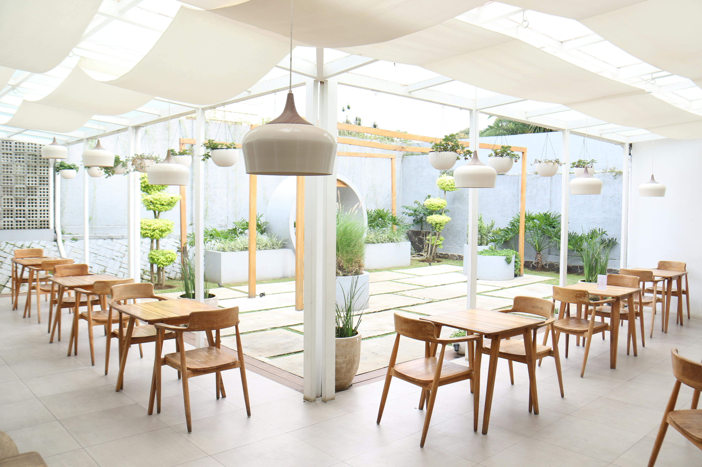

Our Rich History
-
1960

Shortly after coming to Canada, our family decided to open up open up a resturnat. We started from humble beginings since our resturant started off with olny 20 tables. Even from the very begining our resturant always focused on prodviding the best quality cusine, and strived to provide the best customer service possible.
-
1980s
With time people started noticing our resturant and buissness was booming. Customers enjoyed the atention to detail that our resturant strived for so they would always return. We were also almost always at full capacity so we were forced to get a bigger place to keep up with the demand.
-
2010
After 50 years of operation our resturant is still going strong. To keep up with the times we have also renovated our resturant to achive a more elegant and modern look. Although our resturant has evolved a lot through out the years, our original values remain the same. We still strive to provide the best cuisine and customer service possible.
Reviews
-
Joe Smith

Top nouch customers service. A very welcoming environment, every one feels like family.
-
Sarah Parks

Excelent looking website with a beautiful and elelgant design, very easy to use oredering system.
-
Sam Hart
I have been going here for many years, and the excelent quality has remained the same.
Location and Operating Hours
Address: 6801 Route Transcanadienne, Pointe-Claire, QC H9R 5J2
Operating Hours
- Saturday ---- 11a.m.-11p.m.
- Sunday ------ 11a.m.-10p.m.
- Monday ------ 11a.m.-10p.m.
- Tuesday ------ 11a.m.-10p.m.
- Wednesday -- 11a.m.-10p.m.
- Thursday ----- 11a.m.-10p.m.
- Friday --------- 11a.m.-11p.m.
- *Holiday Hours May Differ